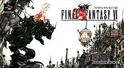

Final Fantasy VI

Final Fantasy VI is a 1994 role-playing video game developed and published by Square for the Super Nintendo Entertainment System. Set in a world with technology resembling the Second Industrial Revolution, the game's story follows an expanding cast that includes fourteen permanent playable characters. The game's themes of a rebellion against an immoral military dictatorship, pursuit of a magical arms race, use of chemical weapons in warfare, depictions of violent and apocalyptic confrontations, several personal redemption arcs, and the renewal of hope and life itself all make the storyline darker and more mature than earlier entries in the franchise.